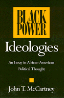

<body bgcolor="#FFFFFF" text="#000000" link="#0000FF" vlink="#CC0000" alink="#CC0000"><center><hr width="350" size="1" align="center" noshade>Tracing the course of Black Power Movements from the 18th century to the present<hr width="350" size="1" align="center" noshade><p><a href="https://cdcshoppingcart.uchicago.edu/Cart/ChicagoBook.aspx?ISBN=9780877229148&&PRESS=temple" target="_top">Buy this book!</a> | <a href="https://cdcshoppingcart.uchicago.edu/Cart/Cart.aspx?PRESS=temple" target="_top">View Cart</a> | <a href="https://cdcshoppingcart.uchicago.edu/Cart/Cart.aspx?PRESS=temple" target="_top">Check Out</a></p><p></p></center><!--none//--><h1>Black Power Ideologies</h1>
<H2>An Essay in African American Political Thought</H2>
<h3>John T. McCartney</h3>
<P>cloth 0-87722-914-7 $54.95, Jun 92, <FONT COLOR=#990033>Out of Print</FONT>
<br>paper 1-56639-145-8 $33.95, Jul 93, <FONT COLOR=#990033>Available</FONT>
<br>Electronic Book 1-43990-377-8 $33.95 <FONT COLOR=#990033>Out of Print</FONT>
<BR> 264 pp
6x9
</P><BLOCKQUOTE><I>"An important study of the history of Black Power ideologies.... This thoughtful, provocative, and well-argued work is clearly written and will make a contribution to Black and American intellectual history."</I>
<br>&#151<b>Darlene Clark Hine</b>, Michigan State University<I></I></BLOCKQUOTE>
<p>In a systematic survey of the manifestations and meaning of Black Power in America, John McCartney analyzes the ideology of the Black Power Movement in the 1960s and places it in the context of both African-American and Western political thought. He demonstrates, though an exploration of historic antecedents, how the Black Power versus black mainstream competition of the sixties was not unique in American history. Tracing the evolution of black social and political movements from the 18th century to the present, the author focuses on the ideas and actions of the leaders of each major approach.
<p>Starting with the colonization efforts of the Pan-Negro Nationalist movement in the 18th century, McCartney contrasts the work of Bishop Turner with the opposing integrationist views of Frederick Douglass and his followers. McCartney examines the politics of accommodation espoused by Booker T. Washington; W.E.B. Du Bois's opposition to this apolitical stance; the formation of the NAACP, the Urban League, and other integrationist organizations; and Marcus Garvey's reawakening of the separatist ideal in the early 20th century. Focusing on the intense legal activity of the NAACP from the 1930s to the 1960s, McCartney gives extensive treatment to the moral and political leadership of Martin Luther King, Jr., and his challenge from the Black Power Movement in 1966.
<BR>&nbsp;<h2>Reviews</h2>
<p><I>"...deeply enrich[es] American historiography and take[s it]s place as part of what can be called a renaissance of interest in the study of African-American history."</I>
<br>&#151<b><I>In These Times</I></b>
<p><I>"</I>Black Power Ideologies<I> is a significant contribution to scholarship, for while there are hundreds of books on Black Power, this work takes the concept from the colonial era to the 1960s, and provides an accompanying political analysis to its historical development. McCartney's treatment of Black Power thought in the 18th Century is at once illuminating and path-breaking; no author has as yet extended the concept of Black Power beyond the 19th Century. This is must reading for those who wish to observe Black abolitionists and colonizers in a new and fascinating perspective."</I>
<br>&#151<b>John C. Walter</b>, Director, Afro-American Studies, University of Washington, Seattle
<BR>&nbsp;<h2>Contents</h2><P>
<p>Preface
<br>Acknowledgments
<p>1. The Background to Black Power
<br><I>Imbalances and Injustices Against African-Americans &#149
Theories About Why Inequality Persists &#149
The Context of Black Protest</I>
<p>2. Black Nationalist Thought in the Eighteenth and Nineteenth Centuries
<br><I>The Colonization Movement: A Profile &#149
Reactions to and Criticisms of Colonization &#149
The Ideology of the Colonization Movement &#149
The Tactics of the Pan-Negro Nationalists &#149
Pan-Negro Nationalism and Beyond</I>
<p>3. The Abolitionist Movement
<br><I>Early Abolitionism, 1645 to 1807 &#149
Abolitionism from 1807 to 1870 &#149
The Ideology of the Abolitionist Movement &#149
Frederick Douglass: A Profile &#149
The Political Thought of Frederick Douglass &#149
The Tactics of the Abolitionists &#149
Abolitionism and Beyond</I>
<p>4. The Politics of Accommodation
<br><I>Booker T. Washington: A Profile &#149
Booker T. Washington’s Philosophy of Education &#149
The Social and Political Thought of Booker T. Washington &#149
The Tactics of Booker T. Washington &#149
Opposition to Booker T. Washington</I>
<p>5. Marcus Garvey and the Resurgence of Black Nationalism
<br><I>Racial Equality by Integration: A Survey &#149
Garvey’s Early Career &#149
Garvey’s Later Career and the Garvey Movement &#149
The Political Thought of Garvey &#149
Garvey’s Organization and Tactics &#149
Minor Expressions of Black Nationalism</I>
<p>6. Martin Luther King and Moralism
<br><I>The Moralist Approach: A Profile &#149
King’s Background and Intellectual Influences &#149
King’s Philosophy of Nonviolence &#149
The Political Thought of King &#149
King’s Tactics &#149
King and the Black Power Challenge</I>
<p>7. What Is Black Power?
<br><I>The Range of Usages of the Term Black Power &#149
Reshaping the Categories of Black Power &#149
Commonalities in the Usage of Black Power &#149
Martin Luther King, Jr., and Black Power</I>
<p>8. The Counter-Communalists: A Comparison and Analysis
<br><I>Huey Newton’s Background and Intellectual Influences &#149
The Political Thought of Huey Newton &#149
Huey Newton and the Tactics of Counter-Communalism &#149
Other Counter-Communalists on Tactics</I>
<p>9. The Black Power Pluralists: A Comparison and Analysis
<br><I>Shirley Chisholm’s Background and Intellectual Influences &#149
The Political Thought of Shirley Chisholm &#149
Other Pluralists on the American System &#149
Shirley Chisholm on the Obstacles to True Pluralism in the United States &#149
Other Pluralists on the Obstacles to Democracy &#149
Shirley Chisholm and the Case for Black Power Pluralism &#149
Other Pluralist Visions of the Good Society &#149
The Tactics of Pluralism</I>
<p>10. The Black Power Separatists: A Comparison and Analysis
<br><I>Elijah Muhammad’s Background and Career &#149
The Political Theology of Elijah Muhammad &#149
Elements of Elijah Muhammad’s Political Theory &#149
The Tactics of Separatism: The Black Muslims &#149
Other Separatists on Tactics: Imamu Baraka and Imari Obadele I</I>
<p>11. A Critical Assessment of the Black Power Ideologies
<br><I>The Paradoxes in the Goals of the Black Power Ideologies &#149
Malcolm X and the Dilemmas of Black Power &#149
The Life of Malcolm X and Its Meaning for the Black Power Movement &#149
Black Power and Individualism &#149
Black Power and the Intellectual &#149
Permanent Contributions of the Black Power Ideologies</I>
<p>Notes
<br>Bibliography
<br>Index
</P><BR>&nbsp;<H2>About the Author(s)</H2>
<P>The late <b>John T. McCartney</b> was Assistant Professor of Government at Lafayette College in Easton, Pennsylvania.</P>
<BR><H2>Subject Categories</H2>
<p><A HREF="/tempress/african.html" TARGET="_top">African American Studies</a>
<BR><A HREF="/tempress/political.html" TARGET="_top">Political Science and Public Policy</a>
</p>
<p align="center"><a href="https://cdcshoppingcart.uchicago.edu/Cart/ChicagoBook.aspx?ISBN=9780877229148&&PRESS=temple" target="_top">Buy this book!</a> | <a href="https://cdcshoppingcart.uchicago.edu/Cart/Cart.aspx?PRESS=temple" target="_top">View Cart</a> | <a href="https://cdcshoppingcart.uchicago.edu/Cart/Cart.aspx?PRESS=temple" target="_top">Check Out</a></p><p><font face="Arial" size="1"><a href="copyright.html" onMouseOver="window.status='Web Copyright Policy';return true;" onMouseOut="window.status=''" title="Web Copyright Policy">&copy;</a> 2015 <a href="http://www.temple.edu" target="new" onMouseOver="window.status='Link to Temple University home page';return true;" onMouseOut="window.status=''" title="Link to Temple University home page">Temple University</a>. All Rights Reserved. http://www.temple.edu/tempress/titles/868_reg.html</font></p>